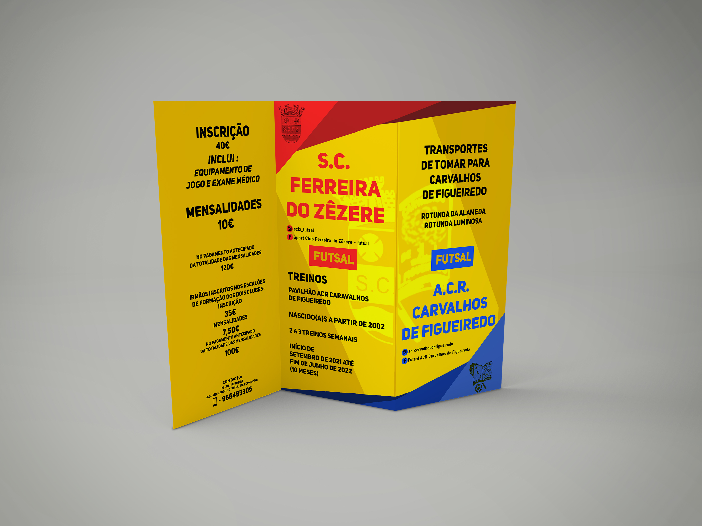
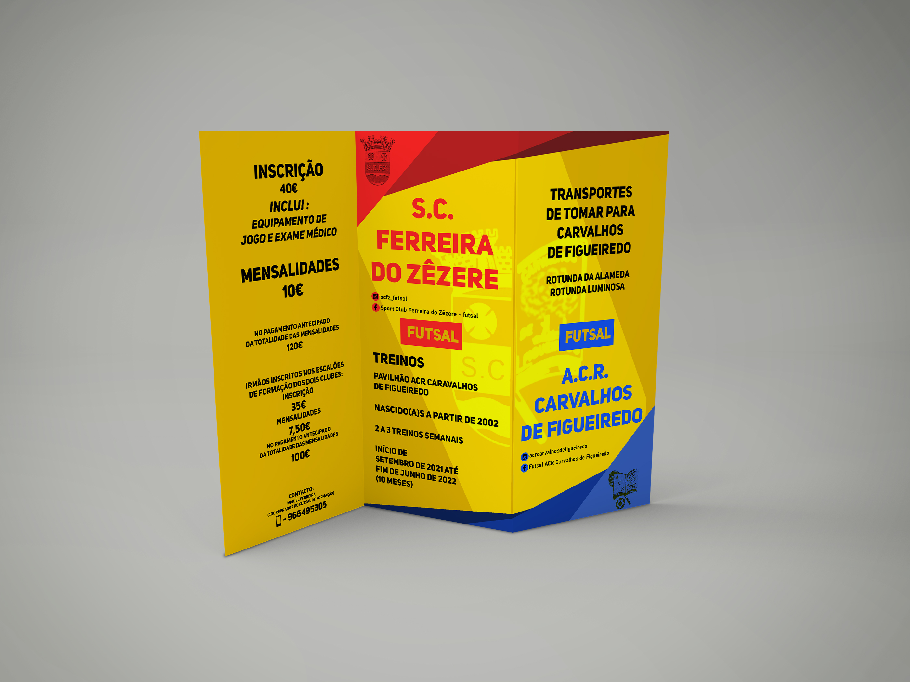
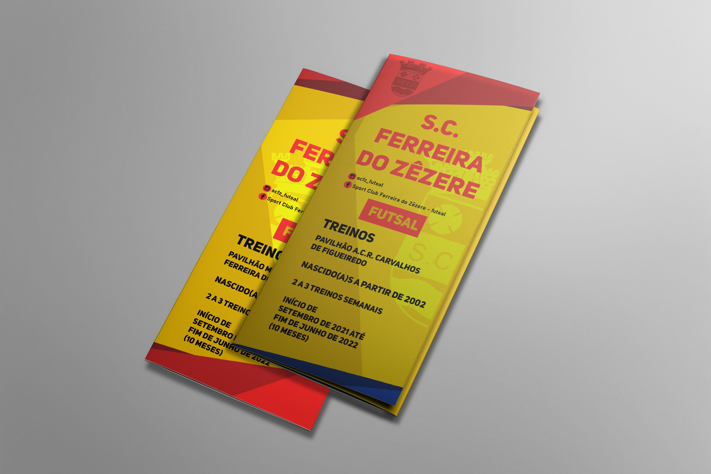
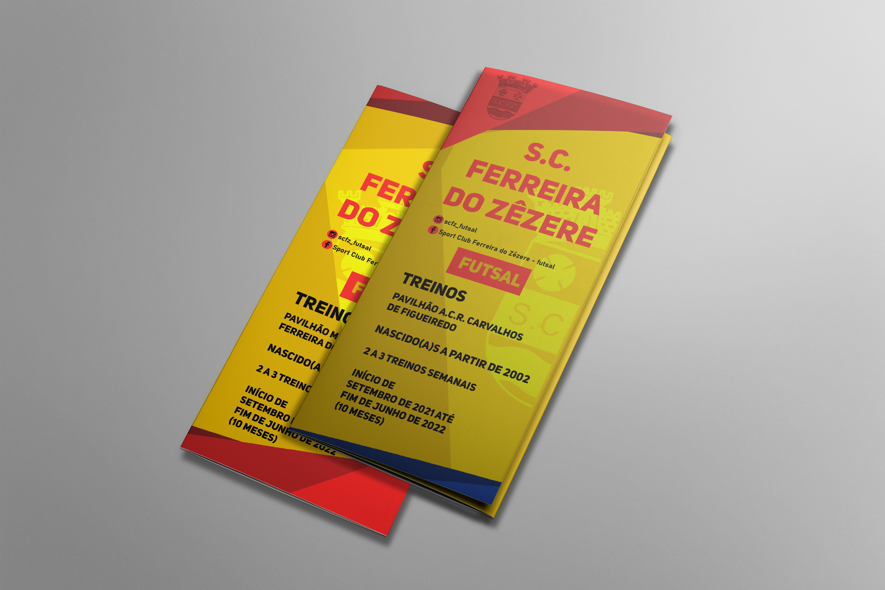

SC FERREIRA DO ZÊZERE
Sport Club Ferreira do Zêzere is a sports club founded on August 15, 1935, located in the village of Ferreira do Zêzere. It is a football club, but it stands out in the sport of futsal, where it currently competes in the main futsal league in Portugal.
In 2021, I was contacted by SCFZ to do some work related to futsal and soccer. It was pre-season, and my job was to create designs for posters, flyers, and brochures for training sessions to recruit young players.
I also ended up doing some work in the field of video editing and animation creating motion graphics to promote recruitment training.
The most notable part of this project was the presentation of the children and young people who had joined the club at that time. I was asked to create a template for an animation presenting each athlete linked to the club in the youth ranks. So I had to find a way to create something interesting and appealing and ended up creating an animation in fake 3D of a letter design for each athlete.

 


 
